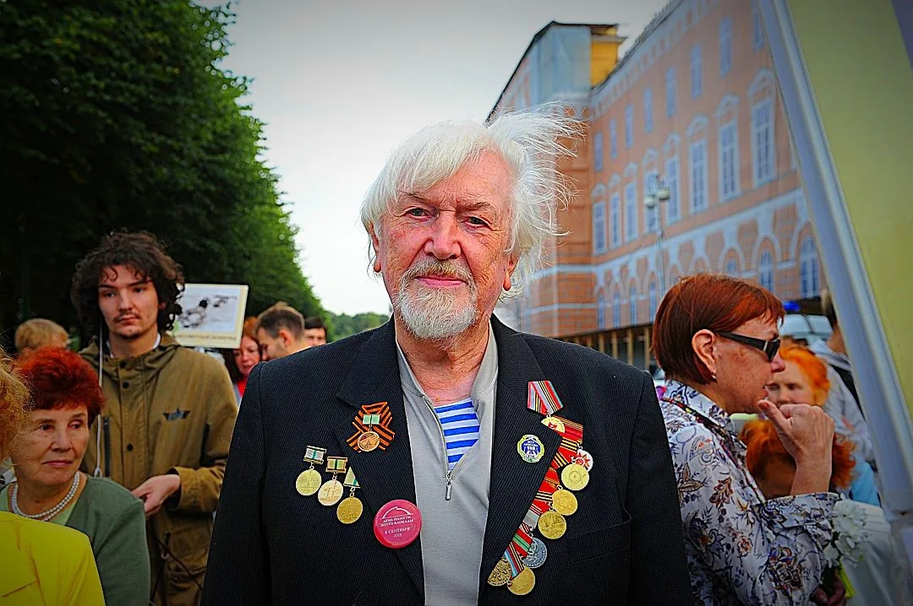

Сайт создан для чтения, воспоминаний и передачи памяти близким.

Фотография предоставлена для проекта. Место, дата и автор снимка уточняются.
18.04.1941Дата рождения
ЛенинградРодной город
872 дняБлокада города, пережитая в детстве
Память поколенийОбщественные встречи и воспоминания
01 / О человеке
От детства в блокаде до встреч с молодёжью
История Владимира Георгиевича охватывает несколько поколений: военное детство, учёбу и работу после войны, жизнь в разных городах и возвращение в Петербург.
«Без него я бы не выжил» — так он вспоминал старшего брата Михаила в материале фонда «Мост поколений».
Владимир Галактионов родился 18 апреля 1941 года в Ленинграде. Все 872 дня блокады он провёл в городе. Маленького ребёнка опекали близкие, пока мать работала; важную роль в его спасении сыграл старший брат.
В 1961 году поступил в Ленинградский институт советской торговли. В дальнейшем работал в сфере торговли, жил в Бердянске и Севастополе, в 2000 году вернулся в Санкт-Петербург.
На протяжении многих лет он выступал как представитель Ленинградского союза «Дети блокады — 900», участвовал в памятных мероприятиях, разговаривал с юнармейцами, студентами, музейными работниками и журналистами. Его устные воспоминания вошли в архив «История от первого лица».
Биография составлена по документальному очерку РИА Новости и архиву «История от первого лица». Ссылки на первоисточники приведены в хронологии и рассказах.
Лица и события
Человек за строками истории
Снимки из документальной встречи фонда «Мост поколений» помогают увидеть Владимира Георгиевича таким, каким его запомнили собеседники.
Владимир Георгиевич родился за два месяца до начала Великой Отечественной войны. Первые годы его жизни прошли в осаждённом Ленинграде.
Читать историю ↓
История Владимира Георгиевича
18 апреля 1941 года в Ленинграде родился Владимир Галактионов. По документальному фотоочерку РИА Новости, его семья жила в доме 17–19 на Английском проспекте. Именно здесь ребёнок встретил начало войны и провёл все 872 дня блокады.
Для него блокада не была школьной темой или страницей учебника. Это первые события собственного детства: ожидание близких, тревога взрослых, холод, нехватка еды и воды. В архиве «История от первого лица» сохранились его отдельные воспоминания об этих обстоятельствах.
В феврале 1942 года семья пережила потерю двух старших родственниц, опекавших маленького Володю, пока мать работала. Особенно значимую роль в его жизни сыграл старший брат Михаил.
Сохранять такие воспоминания важно с указанием рассказчика и источника. Там, где отдельные детали известны лишь со слов героя, мы так их и обозначаем — как свидетельство, не заменяя его догадками.
Рассказ о тех, кто помог ребёнку выжить, и о запахе еды, который невозможно было забыть.
Читать историю ↓
История Владимира Георгиевича
Пока взрослые работали, забота о маленьком Владимире во многом легла на плечи старшего брата Михаила. В воспоминаниях, записанных для фонда «Мост поколений» и проекта центра «Дзержинец», брат остаётся центральной фигурой блокадного детства.
В материалах «Дзержинца» есть эпизод о пути к пункту дополнительного питания на Театральной площади. Ребёнок помнит большие ступени, небольшое помещение и то, как близость пищи ощущалась ещё до того, как её можно было получить.
Этот рассказ помогает понять историю блокады через маленькие действия: довести ребёнка до места раздачи, согреть, накормить, дождаться возвращения матери с работы. Для семейной памяти такие детали нередко оказываются сильнее общих дат.
В архиве «История от первого лица» воспоминания разделены по темам: нехватка воды, холод, сахар в кулёчке, самовар, дополнительное питание после прорыва блокады и другие сюжеты.
Из чего складывалось детское ощущение возвращения мирной жизни.
Читать историю ↓
История Владимира Георгиевича
В 1944 году завершилась блокада Ленинграда, а в мае 1945 года наступила Победа. Для ребёнка, прожившего войну в городе, эти события запомнились не только объявлениями и праздничными датами.
В собрании «История от первого лица» Владимир Георгиевич отдельно рассказывает о снятии блокады, компоте в «Астории», метрономе и салюте в День Победы. Эти записи позволяют услышать историю в его собственной последовательности и интонации.
Важно бережно различать детские воспоминания и историческую справку: детали, услышанные от родных позднее, не всегда совпадают с тем, что человек мог помнить в раннем возрасте. Сам голос свидетеля здесь остаётся первоисточником для рассказа о пережитом.
Биография Владимира Галактионова гораздо шире истории блокадного детства.
Читать историю ↓
История Владимира Георгиевича
В 1961 году Владимир Георгиевич поступил в Ленинградский институт советской торговли. Получил образование экономиста и товароведа промышленных товаров. Профессиональную карьеру начал с работы продавцом и со временем дошёл до руководящей должности в системе торговли.
В 1971 году переехал в Бердянск, позднее жил в Севастополе. В биографическом очерке РИА Новости отмечено, что к началу 1990-х он находился в Севастополе, а в 2000 году вернулся в Санкт-Петербург.
Эта часть жизненного пути ещё требует дополнения личными фотографиями, документами об учёбе и работе, историями о коллегах и друзьях. Именно они помогут сделать сайт рассказом о человеке целиком, а не только о войне.
Одна из публичных встреч, на которой блокадники делились памятью с людьми в разных странах.
Читать историю ↓
История Владимира Георгиевича
В 2019 году телеканал «МИР 24» рассказал о телемосте, объединившем жителей блокадного Ленинграда из нескольких стран. Среди участников со стороны Санкт-Петербурга был Владимир Георгиевич Галактионов.
В репортаже отмечено его воспоминание о небольшом огороде у Исаакиевского собора: в голодные месяцы надежда получить урожай воспринималась особенно остро.
Такие встречи показывают, как личные истории помогают людям, живущим далеко друг от друга, сохранить общую память. Для будущего архива полезно отдельно собрать афиши, запись телемоста и фотографии участников.
В материалах центра «Дзержинец» звучит личное свидетельство Владимира Георгиевича о блокаде.
Читать историю ↓
История Владимира Георгиевича
Весной 2020 года Центр патриотического воспитания молодёжи «Дзержинец» организовал серию дистанционных мероприятий к 75-летию Победы. В программу входили семейные истории, чтение фронтовых писем и показ архивных видеовоспоминаний свидетелей войны.
В информационном материале проекта приведён фрагмент рассказа Владимира Георгиевича о дополнительных порциях питания в блокадном Ленинграде и помощи старшего брата. Материал адресован молодым людям, которым важно услышать историю от её непосредственных свидетелей.
Это один из ключевых сюжетов будущего медиараздела. Видеозапись центра нужно получить по точной ссылке на публикацию или из его архива: ссылку на группу нельзя ошибочно выдавать за ссылку на конкретный ролик.
Владимир Георгиевич участвовал в памятных мероприятиях с юнармейцами и кадетами.
Читать историю ↓
История Владимира Георгиевича
В феврале 2022 года организация «ОФИЦЕРЫ РОССИИ» опубликовала отчёт о памятных мероприятиях к очередной годовщине освобождения Ленинграда от блокады. Среди почётных гостей был Владимир Георгиевич Галактионов — руководитель Ленинградского союза «Дети блокады — 900».
В программу вошли уроки мужества с участием молодёжи, встречи с блокадниками и возложение цветов на Пискарёвском мемориальном кладбище.
Для сайта важно показывать не только факт присутствия на мероприятии, но и его смысл: свидетель блокады разговаривает с поколением, которое знает войну прежде всего по книгам и документальным фильмам.
На 26 ноября 2022 года была запланирована встреча с Владимиром Галактионовым и Владимиром Пидманом.
Читать историю ↓
История Владимира Георгиевича
Центр «Дзержинец» объявил о проведении в Музее железных дорог России урока мужества, посвящённого памяти о войне и истории Дороги Победы.
В программе были заявлены Владимир Георгиевич Галактионов, переживший блокаду ребёнком, и Владимир Георгиевич Пидман, сын одного из проектировщиков железной дороги.
Сохранившийся источник — именно анонс. Пока не обнаружен независимый отчёт с фотографиями или записью этой встречи, мы не можем утверждать, что мероприятие состоялось в указанном составе. Это важное уточнение для достоверности архива.
Разговор о памяти блокады с участниками из разных стран.
Читать историю ↓
История Владимира Георгиевича
24 января 2025 года Музей Победы провёл международную онлайн-конференцию «В борьбе за Ленинград», приуроченную к 81-й годовщине полного освобождения города от блокады.
По опубликованному отчёту, Владимир Георгиевич Галактионов обратился к участникам конференции с приветствием. Встреча объединила исследователей и людей, занимающихся сохранением памяти о войне.
Его участие подчёркивает одну из задач общественной работы: документы и воспоминания должны сохраняться не только в семьях, но и в открытом разговоре между поколениями и странами.
Встреча с живыми свидетелями истории и разговор о блокадном детстве.
Читать историю ↓
История Владимира Георгиевича
Музей «Дети и дошкольные работники осаждённого Ленинграда» при Некрасовском колледже сообщил о встрече с людьми, пережившими блокаду в детском возрасте. Среди гостей были Юрий Лопатин и Владимир Галактионов.
Музей хранит детские фотографии участников. В публикации отдельно упоминается снимок четырёхлетнего Владимира Галактионова, датированный апрелем 1945 года.
Для будущей фотогалереи это особенно ценный источник: он связывает сегодняшнего рассказчика с конкретным детским изображением. Копию фотографии можно разместить на сайте после получения её у владельца или разрешения музея.
Ещё одна публикация, в которой звучат воспоминания о блокадном городе.
Читать историю ↓
История Владимира Георгиевича
27 января 2026 года издание 78.ru опубликовало материал о жизни осаждённого Ленинграда и воспоминаниях его жителей.
В публикации приводятся свидетельства Владимира Георгиевича о блокадном быте. Это источник, к которому стоит обращаться при подготовке отдельных очерков: он помогает связать краткие воспоминания с историческим контекстом.
Для сайта подготовлена собственная аннотация. Полный журналистский текст остаётся у редакции 78.ru, а ссылка позволяет читателю проверить первоначальную публикацию.
Владимир Георгиевич выступил не только как свидетель истории, но и как автор стихов.
Читать историю ↓
История Владимира Георгиевича
В сентябре 2026 года Дом детского творчества опубликовал отчёт о торжественном мероприятии для ветеранов и жителей блокадного Ленинграда.
Владимир Георгиевич прочитал стихотворение Корнея Чуковского «Ленинградским детям» и собственные произведения, основанные на личных воспоминаниях.
Для сайта стоит собрать авторские стихи в отдельную литературную рубрику. Публиковать их полный текст следует с согласия Владимира Георгиевича; уже сейчас можно сохранить описание выступления и ссылку на организаторов.
20 снимков: дом, детство, семья, Пискарёвское кладбище
В именном архиве есть детский портрет Владимира Георгиевича, фотографии с внуком, домашние кадры и вещи, сохранившие память о блокаде. Фотографии пока показываются в оригинальном альбоме РИА: текущая версия фотобанка не отдаёт надёжные прямые адреса этих старых снимков, и мы не подменяем их другими.
Отдельные видеопубликации центра «Дзержинец» находятся в поиске. Ссылку на сообщество оставляем как источник, но не выдаём её за конкретную видеозапись: страница центра «Дзержинец» ↗.
06 / Исследования
Сохранить историю для будущих поколений
Владимир Георгиевич участвует в работе по увековечиванию памяти героев самопожертвования. Это отдельное исследовательское направление, которое необходимо развивать с опорой на документы.
«Герои самопожертвования»
Совместный исследовательский проект по восстановлению имён, биографий и сведений о подвигах. Подготовлен цифровой реестр на 456 позиций, архив оригиналов и расшифровки. Данные продолжают проходить независимую проверку.
Материалы проекта не публикуются автоматически в биографическом разделе и не заменяют личную историю Владимира Георгиевича.
Как можно пополнить архив
Семейные фотографии, записи интервью, афиши встреч, видеоролики и письма можно включить в будущие разделы. Для каждого предмета сохраняются дата, автор, место, контекст и разрешение на публикацию.
Перед открытым запуском Владимир Георгиевич сможет посмотреть тексты и подтвердить сведения.
Об источниках и точности
Этот сайт — рабочая исследовательская редакция, подготовленная по открытым публикациям. Авторские статьи изложены заново на основе документов и сообщений первоисточников; полные сторонние тексты не копируются. Биографические сведения, редакционные пометы и статусы анонсов различаются. Фотоматериалы РИА Новости, музеев и СМИ не перенесены без подтверждения прав. Фотография на главной странице предоставлена для работы над сайтом; автор и дата уточняются.
В публикациях встречается обозначение «900 дней» в названии организации; фактическая продолжительность блокады Ленинграда составила 872 дня. Это различие намеренно сохранено.

 Фото у источника ↗
Фото у источника ↗